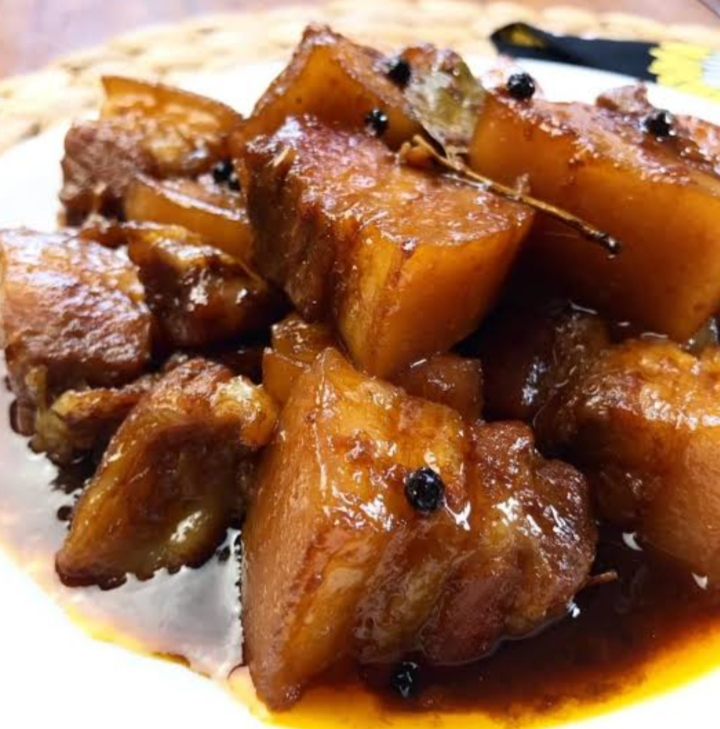

About Me
Hi! My name is Sandara P. Sangcajo; you can call me "dara." I live in Sitio Kawayan Habay 2 Bacoor Cavite. Some of my favorite things to do are watching kdrama, Cdrama movies, and, of course, our own Filipino penicula, dancing, and sleeping. These are activities that I enjoy immensely and indulge in daily. I have been told that I am talkative, kind, naughty, attitude-prone person with "oddities." I look up mostly to my family members, especially my mom, as a guiding figure in life.
I can cook pickled pork and rice porridge and, of course, fry tilapia, chicken, pork, and of course, the egg won't go away.